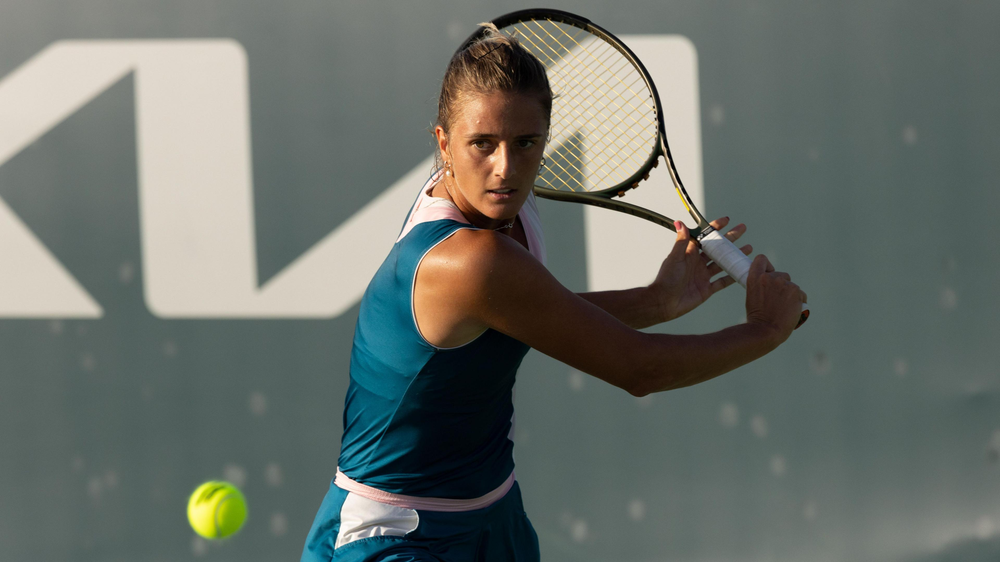

Sport Preview - top 5 - generated: 20251021_145214
Norrie battles past Rublev to progress in Austria
BBC Sport - Tennis - Original — pubDate: Tue, 21 Oct 2025 16:55:50 GMT

Cameron Norrie made it to the semi-finals of Wimbledon in 2022
Britain's Cameron Norrie battled his way to victory over seventh seed Andrey Rublev to progress to the second round of the Erste Bank Open.
World number 35 Norrie won the two-hour match 6-2 6-7 (5-7) 6-2 in Austria.
Norrie, 30, started the match in fine fashion and took the opening set in just 34 minutes before breaking serve to move 2-0 up in the second.
The Briton served for the match at 5-4, but Rublev landed his first break of serve to force a tie-break, which he won to set up a deciding set.
Former world number eight Norrie regrouped to break Rublev's serve in the second game to take command of the third set.
Norrie broke once more to book his spot in the next round, where he will face either Australia's Alexei Popyrin or Italy's Matteo Berrettini.
"It was all round a really good performance, I was moving well and able to dictate the points," said Norrie.
"I got a bit tight and tentative when I was serving for the match but credit to him staying in and competing."
Live scores, results and order of play
Get tennis news sent straight to your phone
Champions League: Arsenal, Man City & Newcastle up next, Rashford double for Barca
Championship: Eight games including leaders Coventry at Portsmouth
Dyche urges Forest players to win back fans
A classic fantasy adventure with Christopher Lambert
Sinner to miss Italy's Davis Cup title defence
BBC Sport - Tennis - Original — pubDate: Mon, 20 Oct 2025 15:58:08 GMT

Jannik Sinner was world number one until losing the US Open final to Carlos Alcaraz in September
Four-time Grand Slam champion Jannik Sinner will not be part of the Italy team aiming to clinch a third consecutive Davis Cup title next month.
The 24-year-old reached all four Grand Slam singles finals in 2025, winning the Australian Open and Wimbledon, and won the Six Kings Slam exhibition event in Saudi Arabia on Saturday.
Sinner is scheduled to take part in the ATP Tour Finals in Turin from 9-16 November, but Italy captain Filippo Volandri said the world number two had "not given his availability" to play at the Davis Cup in Bologna from 18-23 November.
World number one Carlos Alcaraz has been named in Spain's team.
Sinner dominates Alcaraz at lucrative Six Kings Slam
'Sport must adapt', says Draper after Rune injury
Sinner says he has taken the decision to miss the Davis Cup so he can have extra preparation time for the start of next season, with the Australian Open being the first Grand Slam of the year in January.
"It wasn't an easy decision, but after Turin, the goal is to get off on the right foot in Australia," Sinner told Sky Sport Italy. "It may not seem like it, but a week of preparation during that period can make all the difference.
"We won the Davis Cup in 2023 and 2024, and this time we decided this with my team."
Lorenzo Musetti and Flavio Cobolli, eighth and 22nd in the world respectively, will be the highest-ranked singles players on show for Italy, who face Austria in their quarter-final.
Volandri said: "The Davis Cup is, and will remain, always his home and I am sure that Jannik will soon be part of the team again.
"In the meantime, I can count on a group ready to fight and give everything for the blue jersey."
Sinner's absence comes after several players voiced concerns about a demanding tennis calendar in recent weeks.
After Holger Rune sustained a season-ending injury at the Nordic Open on Saturday, British number one Jack Draper posted on social media that "the tour and the calendar have to adapt if any of us are going to achieve some sort of longevity".
Second seed Rosatello out on day one of Wrexham Open
BBC Sport - Tennis - Original — pubDate: Tue, 21 Oct 2025 17:09:49 GMT

Camilla Rosatello has won two doubles titles on the WTA Challenger Tour
Venue: Wrexham Tennis and Padel Centre Date: 21-26 October
Coverage: Watch live on BBC Sport online and BBC iPlayer
Italy's second seed Camilla Rosatello was knocked out in the opening match of the Wrexham Open by Slovakia's Katarina Kuzmova.
Rosatello dropped the first set but bounced back to win the second on a tie-break to force a deciding set.
However, the 30-year-old was broken early in that final set by Kuzmova, and went on to lose 7-6 (7-4) 6-7 (4-7) 6-4.
There was to be no such problem for fourth seed Kathinka von Deichmann of Liechtenstein or fifth seed Raluca Georgiana Serban of Cyprus.
Serban was forced to do things the hard way, however, after dropping the first set against Great Britain's Ranah Akua Stoiber.
Serban responded by racing through the second set, and while Stoiber forced a tie-break in the decider, the 28-year-old Cypriot would go on to win 1-6 6-0 7-6 (7-5).
Elsewhere in the first round of the women's singles there were straight-set wins for Jana Otzipka, Elena Malygina, Amarni Banks and Lucie Havlickova, while Andre Lukosiute progressed after winning a deciding set against Gina Marie Dittmann.
Mimi Xu was beaten by Emma Raducanu in the first round of the women's singles at Wimbledon this year
The home crowd in attendance in Wrexham on the opening day were firmly behind Welsh 18-year-old Mimi Xu in the first round of the women's doubles.
Xu and McDonald continued their dominance into the second set, and dropped just two further games on the way to completing a 6-3 6-2 win in north Wales.
They will face third seeds Naima Karamoko of Switzerland and Jessika Ponchet of France in the quarter-finals.
Ponchet and Karamoko cruised through 6-0 6-1 against Britain's Georgiana Mititelu and Elizabeth Evans.
Driving test more stressful than Wimbledon - Xu
BBC Sport - Tennis - Original — pubDate: Tue, 21 Oct 2025 08:36:24 GMT

Mimi Xu enjoyed notable wins at tournaments in Birmingham, Ilkley and Nottingham last season
Venue: Wrexham Tennis and Padel Centre Date: 20-26 October
Coverage: Watch live on BBC Sport online and BBC iPlayer
Teenage tennis star Mimi Xu says her driving test was far more stressful than playing Emma Raducanu on her Wimbledon debut.
Wildcard Xu won the hearts of the nation when she became the first Welsh player to enter the All England Club's main singles draw in 20 years.
Xu drew British number one Raducanu in her first-round match and played in front of thousands on Court One.
But the 18-year-old from Swansea says her practical driving test was much more of an ordeal.
"Leading up to the moment I passed, I was so tense, there was no way I could have driven back afterwards," she said.
"My mum doesn't trust me enough yet to drive on the big roads!"
Wrexham to host north Wales' biggest tennis event
Xu is one of 12 British hopes in the Wrexham Open, the biggest tennis event to come to Wales in almost 30 years.
Fresh from winning a W35 doubles title in Birmingham and with a career-best singles ranking of 309, Xu is hopeful of having a good run in north Wales.
She has been drawn against the number three seed, Lithuania's Justina Mikulskyte.
"I'm feeling confident in my game, I'm ready to go, ready to compete," Xu said.
"Everyone is at the level now where they can beat anyone on their day. Now that I'm 18 I get to play freely, there is always next week.
Boulter's poor run continues with first-round loss
BBC Sport - Tennis - Original — pubDate: Mon, 20 Oct 2025 11:14:46 GMT

Katie Boulter has not made it past the second round at a Grand Slam in 2025
British number three Katie Boulter's poor run of form continued with a straight-sets loss to world number 44 Eva Lys in the first round of the Pan Pacific Open in Tokyo.
Boulter, 29, was beaten 6-2 6-1 in just one hour and 14 minutes by the 23-year-old German.
After coming through two rounds of qualifying, she was the only British player in the main draw after Emma Raducanu withdrew, ending her season early through illness.
This latest defeat caps a disappointing run of form, which has seen the former world number 29 unable to progress beyond the second round of a tournament since the Nottingham Open in June.
It also comes five days after the Briton lost in straight sets in the second round of the Japan Open by world number 51 Sorana Cirstea.
Elsewhere, British number four Fran Jones was beaten in straight sets by China's Wang Xiyu in the first round of the Guangzhou Open.
Seventh seed Jones was broken four times in the match as she lost 6-4 6-4 to the world number 163.
Live scores, results and order of play
Get tennis news sent straight to your phone
Champions League: Build-up to Arsenal, Man City & Newcastle, plus Barca updates
Championship: Eight games including leaders Coventry at Portsmouth
Dyche urges Forest players to win back fans
A classic fantasy adventure with Christopher Lambert
Danny Robins tells bite-sized tales of terror